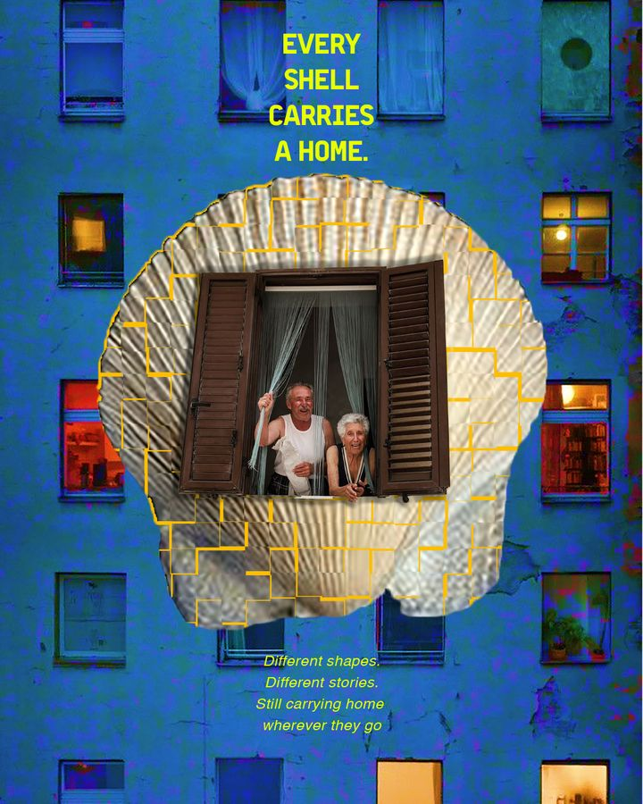
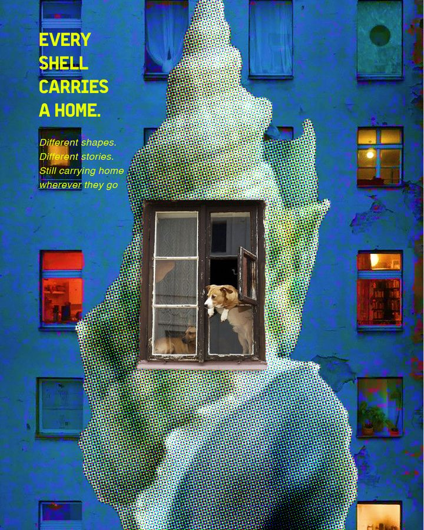
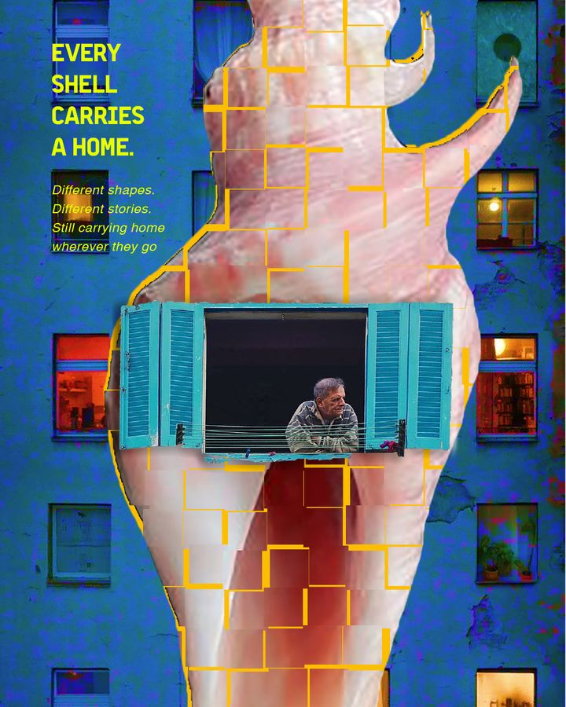

I’m a Communication Design student at Shih Chien University. I like noticing the design hiding in everyday objects and systems — and this project is what I noticed about one small word: home.
See the dictionary →A word this small holds too many meanings for one poster. A dictionary lets them sit side by side: a crayon house next to a shell, an address next to a body.
Thirty days gave me thirty tries at the same sentence. [YOUR OWN NOTE ABOUT WHY HOME MATTERS TO YOU]


